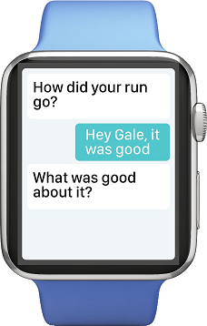

Gale: Voice Assistant for Goals
Gale is a conversational Artificial Intelligence designed to help you form goals and habits. Gale is context-aware and able to learn from you to personalize your experience.
Design
Conversational AI

Talking to Gale is like talking to a real person; you can use both voice and text to make goals and habits.
Mobile
Gale is available for both your mobile device and your smartwatch.
Context-Aware
Gale is context-aware: she will provide specific information to help you accomplish your goals.
Reflection
Gale encourages qualitative reflection to achieve a more holistic view of your progress.
Video Prototype
Documents
Team
Travis Chen
 Tim Lau
Tim Lau
 Rebecca Wong
Rebecca Wong
 Seth Pendergrass
Seth Pendergrass
Tim Lau
Rebecca Wong
Seth Pendergrass